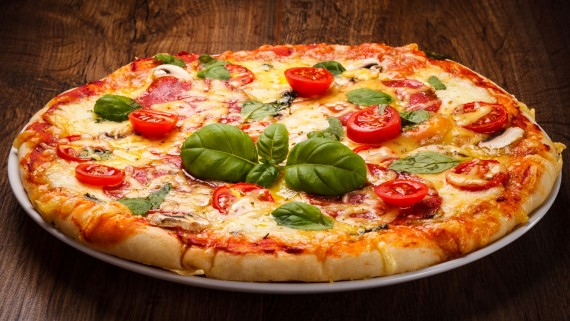

Esta aplicacion nos explica acerca de la comida italiana su preparacion y sus costumbres de ese pais.
Menu Principal
PIZZA

La pizza, con todas sus variedades y complementos, es sin duda el plato más popular no sólo en Italia, sino en gran parte del mundo, y es que la variedad de texturas y contenidos que puede incluir en su preparación la hacen un plato ideal para ser adaptado a otras culturas, principalmente por sucapacidad de fusionar distintos ingredientes. La pizza más tradicional es la que lleva como base un pan plano horneado, que se elabora a base de harina de trigo, agua, sal y levadura, el cual se cubre con salsa de tomate y queso mozzarella. A partir de ahí, el resto de ingredientes van al gusto y están abiertos a la imaginación de cada comensal. Así, existen multitud de recetas de pizza, ya sean de carne, verduras, diferentes quesos, pescados… El abanico de posibilidades es muy amplio; no obstante, aquí te damos los nombres de las recetas más populares:
• Pizza marinara: sus ingredientes son las rodajas de tomate y el orégano.
• Pizza margarita: esta pizza también incluye rodajas de tomate, así como bolas de queso mozzarella.
• Pizza napolitana: incluye los mismos ingredientes que la pizza margarita, pero además se le anaden orégano y basílico.
• Pizza primavera: sus ingredientes característicos son las olivas y las alcachofas.
• Pizza cuatro estaciones: la pizza quattro stagioni incluye ingredientes característicos de cada época del ano. Así, por la primavera incluye olivas y alcachofas; en representación del vernao, se incluye salami y pimienta; el otono se ve reflejado a través del tomate y la mozzarella; el invierno, finalmente, se muestra a través de las setas y el huevo cocido.
• Pizza cuatro quesos: tal y como su propio nombre indica, esta pizza incluye cuatro tipos de queso distintos, que suelen ser queso mozzarella, queso azul, queso provolone y queso parmesano.
Spaghetti es el plural del término spaghetto y se ha adaptado al espanol como espaguetis. El significado de spaghetto es cordón y se deriva de la forma que tiene este tipo de pasta: alargada y delgada, como una “cuerda”, de sección circular, al contrario que los tallarines, cuya forma es aplanada. Del mismo modo que los tagliatelle, también son comunes en la cocina de China; por ejemplo, los tallarines de arroz son similares. Al igual que los otros tipos de pasta, se cuecen y después se sirven con alguna salsa.
La bruschetta es otro antipasto muy popular y tradicioanal de Italia central. Su preparación es muy sencilla, ya que consiste en varias rebanadas de pan tostado en las que se frota ajo y, después, se asan en un horno especial denominado brustolina para que queden doradas. Una vez hecho esto, se les anade aceite de oliva, pimentón molido y sal, aunque estos ingredientes pueden variar según la región o zona donde se preparen, ya que se trata de un aperitivo abierto a la imaginación de cada uno. También se anade queso, tomate y otras verduras cortadas en pequenos dados, como pimientos, zanahorias, maíz dulce, cebolla… En la región de la Toscana, este plato recibe el nombre de fettunta, cuyo significado literal es rebanada en aceite
La lasaña es una variedad de pasta en forma de lámina cuadrada. Este plato consiste en varias de estas láminas intercaladas hasta formar un bloque. Entre cada lámina se anade un relleno que puede ser de carne, pescado o verduras y que va mezclado con alguna salsa típica, habitualmente la bolonesa. El ingrediente que nunca falta en una buena lasana es la bechamel. Es tradicional cocinarla al horno, por lo que en Italia se la suele llamar lasagna al forno. El término lasana procede del latín lasanum y, en realidad, hace referencia al recipiente que se utilizaba antano para cocinarlo.